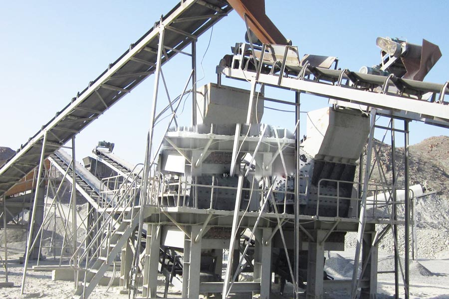

Construction waste crushing production line

Mobile construction waste crushing station for urban construction waste crushing.
granite aggregate grinding machine
Crushed gravel aggregate production line, sand and gravel mining crushing equipment, sand washing and screening equipment, PYY series - single-cylinder hydraulic shock 6HL efficient break - screen DHLG high pressure roller mill - PCL ... stone crusher aggregate production line production line process PCL500 (dual motor) configuration sets aggregate production line.
granite aggregate grinding machine. Aggregate crushing production process, aggregate crushing, aggregate crushing equipment, along with artificial sand and gravel aggregate in our heavy use of artificial aggregate production line, more and more, here on aggregate production line broken Equipment and combinations thereof.

Aggregate crushing plant
CAG Machinery ( Aggregate plant) in mineral processing aspects widely used, many customers get more benefits, CAG product also mainly for minerals, rock crusher, mineral grinding, sand stone and mineral processing and other fields. We provide Aggregate plant technical guidance, based on your specific needs, for your rational design of production lines.
Because the tariff is low, you can ( Aggregate plant) to save a lot of costs, it can also be purchased to get more benefits, our products and designs for you is really value for money.
Aggregate plant includes vibrating feeder, jaw crusher, impact crusher, vibrating screen, belt conveyor and centrally electric controlling system, etc. The designed capacity is from 50t/h to 500t/h. To meet customer’s specific requirement, we can also add other equipments such as cone crusher, dust catcher on the production line.
Aggregate production line with a type of three options. Three options limestone aggregate production line with a type of granite, river pebble stone quarry in common, so consult limestone crusher production line, how low cost crushed granite.
The jaw crusher is used as first and impact crusher is used as secondary crusher with the features of simple flow, very cubical shape products and low investment etc.
Process of Aggregate Plant:
Big materials are fed to the jaw crusher evenly and gradually by vibrating feeder through a hopper for primary crushing. After first crush, the material will transferred to impact crusher by belt conveyor for secondary crush; the crushed materials will then transferred to vibrating screen for separating. After separating, the parts that can meet standard will be transferred away as final products, while the other parts will be returned to impact crusher, thus forming a closed circuit. Size of final products can be combined and graded according to customer’s specific requirement. We can also equip dust catcher system to protect environment.
CAG Group has abundant experiences in designing, production, installation and commissioning of crushing line. CAG Group not only provides the main crushing equipments, such as various Crushers, Belt Conveyors, Feeders, but also the quality framing-members and unitized solutions. CAG Group's framing- member adopts advanced cutting, welding, sand blasting and anticorrosion treatment, which make sure everywhere of the crushing line is perfect, even a screw.
Aggregates crushing should be careful selection of the crusher. Infrastructure, vigorously carry out, the demand for sand and gravel materials increases, the rapid development of mining crushing machinery industry, but a wide variety of stone crusher, then how to choose a suitable bone feed crusher.
South Africa aggregate crushing plant suppliers. Processing sand gravel aggregate crushing equipment, sand making equipment manufacturers offer. Industry-specific machinery and equipment, sand making equipment crushing equipment, which is processing sand gravel aggregate crushing equipment. Construction waste recycled aggregate equipment, industrial milling equipment and sand making equipment.
Leave Me A Message, Now
If you have any questions regarding equipment prices, production line configuration or other problems, you can send a message to us, we will contact you soon.